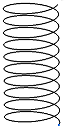
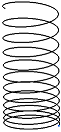
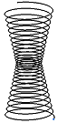
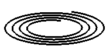
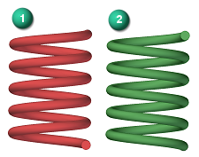
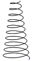
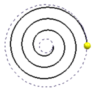
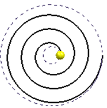
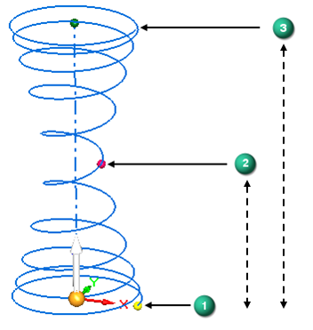

Helical Curve Parameters dialog box
The Helical Curve Parameters dialog box is opened automatically when you create a helical curve using the Helical Curve command (Surfacing tab→Curves group→Helical Curve ). You can use the parameters in this dialog box to design a wide variety of helical curves.
- Type
-
Specifies the type of helical curve to create:
- Constant Pitch
-
Select this option to create a helical curve with a pitch that does not vary along the length of the axis. An optional taper by angle or diameter is available.

- Variable Pitch
-
Select this option to create a helical curve with a pitch that constantly increases or decreases along the length of the axis. An optional taper by angle or diameter is available.

- Compound
-
Select this option to create a helical curve that supports variations in pitch and diameter throughout the length of the axis. You define this type of helical curve using points that can be uniform or variable in length, and that support multiple pitch and diameter changes.

- Spiral
-
Select this option to create a 2D spiral curve. You define this type of helical curve using the end diameter and turns, the end diameter and radial pitch, or radial pitch and turns.

Note:The type of curve created persists until another type is created.
- Method
-
Specifies the parameters to use to create the helical curve. The options that are available vary with the type of helical curve you are creating.
- Length and Turns
-
Select this option to define the helical curve using length and turn variables.
- Length and Pitch
-
Select this option to define the helical curve using length and pitch variables.
- Pitch and Turns
-
Select this option to define the helical curve using pitch and turn variables.
- End diameter and Turns
-
For a spiral helical curve, defines the helical curve using end diameter and number of turn variables.
- End diameter and Radial Pitch
-
For a spiral helical curve, defines the helical curve using end diameter and radial pitch variables.
- Radial Pitch and Turns
-
For a spiral helical curve, defines the helical curve using radial pitch and number of turn variables.
- Rotation
-
A helix can twist in two possible directions. You use this option to identify if the curve is to use a right-handed (1) or left-handed (2) rotation.

- Left-handed
-
When seen from a point of view from either end of the axis, the turns of the helix move away from you in a counter-clockwise rotation for a left-handed helix.
- Right-handed
-
When seen from a point of view from either end of the axis, the turns of the helix move away from you in a clockwise rotation for a right-handed helix.
- Taper
-
You can use this option to define an increasing or decreasing taper to your helical curve.

- By Angle
-
To set the taper by entering a angular value, choose this option and enter a value. Then select if the taper is Inward from the start point or Outward from the start point.
- By Diameter
-
To set the taper by entering a beginning diameter and end diameter, choose this option.
- Direction
-
Specifies the direction that the spiral helical curve is formed when the creation method is Radial Pitch and Turns.The Inward and Outward direction options are also used to define a tapered helical curve.
- Inward
-
The start point is located at the outside and spirals or tapers inward towards the center.
Example:
- Outward
-
The start point is located at the center and spirals outward.
Example:
- Start diameter
-
This diameter is initially defined by the distance the between the selected axis and the selected starting point, the distance between the face of the cone or cylinder and its axis, or the diameter of a selected circle.
- Saved settings
-
You can use this field to preserve a set of parameters that can then be recalled and used for another helical curve either using this feature, or by selecting the named configuration using the Saved Settings option on the Helical Curve command bar.
- End pitch
-
Use this field to enter a pitch value when a Variable Pitch type of curve is being created and the Method used is either Length and Pitch or Pitch and Turns.
- Length
-
Use this field to enter a length value when a Constant Pitch or Variable Pitch type of curve is being created and the Method used is either Length and Pitch or Length and Turns.
Length that it is derived from geometry such as when the axis is defined using 2 keypoints, a line, a cylinder, or a cone face is displayed as read-only.
- Pitch
-
Use this field to enter the uniform pitch value for a Constant Pitch type of curve or the starting pitch value for a Variable Pitch type of curve where the Method used is either Length and Pitch or Pitch and Turns. The pitch is expressed as the amount of linear distance along the axis of the helix it takes to make a complete 360 degree turn of the helix. If the axis of a helix was 100 mm long and the helix had only 1 turn the pitch would be 100 mm. A pitch of 50 mm would result in a complete turn every 50 mm or exactly two complete turns over a 100 mm axial length.
- Number of turns
-
Use this field to enter the number of turns about the axis for Constant Pitch or Variable Pitch type of curves where the Method used is either Length and Turns or Pitch and Turns. Each complete turn is 360 degrees.
- Compound parameters
-
The compound parameters table is displayed only if you select the Compound option for the Type of helical curve you want to create. Each line in the table represents a different length of the helix measured from the initial start point of the curve to the defined point.
The fields that you can edit in the table are based on the Method you select to define the helix. More points can be created by highlighting a row other than the start point or end point and pressing the Insert button.
-
For the Length and Pitch method, define the Length as the distance from the start point to the defined point. You can then enter a Pitch value followed by the Diameter value at the defined point. The number of turns are accumulative from the start point and are calculated based on the entered Pitch value.
-
For the Length and Turns method, define the Length as the distance from the start point to the defined point. You enter an initial Pitch and then the accumulated number of turns Turns from the start to the defined point. Then enter the Diameter at the defined point. In this case the Pitch value is calculated.
-
For the Pitch and Turns method, the Turns are accumulative from the start point and the Length is calculated based on the entered number of Turns. The Diameter represents the value at the defined point.

In this example, three points represent a Compound curve that has two lengths. The start point (1) has an initial Pitch value, the measured Diameter value at that point, and has no turns. Point 2 Length is the measured length from the start point (1). The Diameter value is the measured diameter at point 2. The number of turns is the total accumulated number of turns from the start point (1) to point 2. Point 3 Length is the measured length from the start point (1). The Diameter value is the measured diameter at point 3. The number of turns is the total accumulated number of turn from the start point (1) to point 3.
-
How do I
Create a helical curveCreate a spiral curve
Look up more details
Helical Curve commandHelical Curve command bar